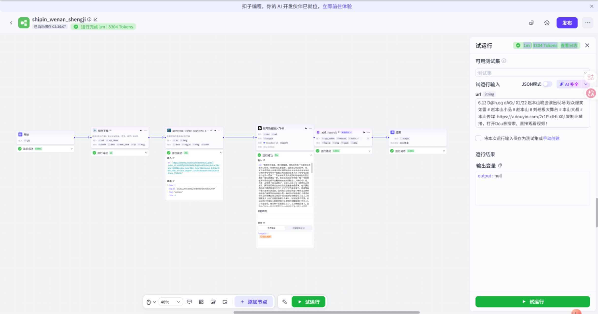
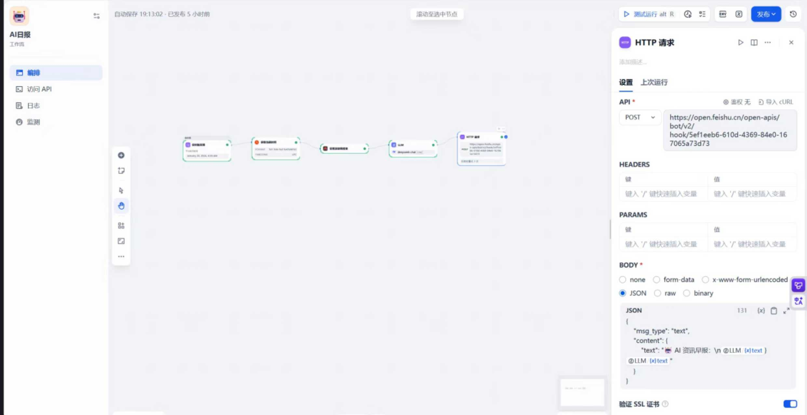
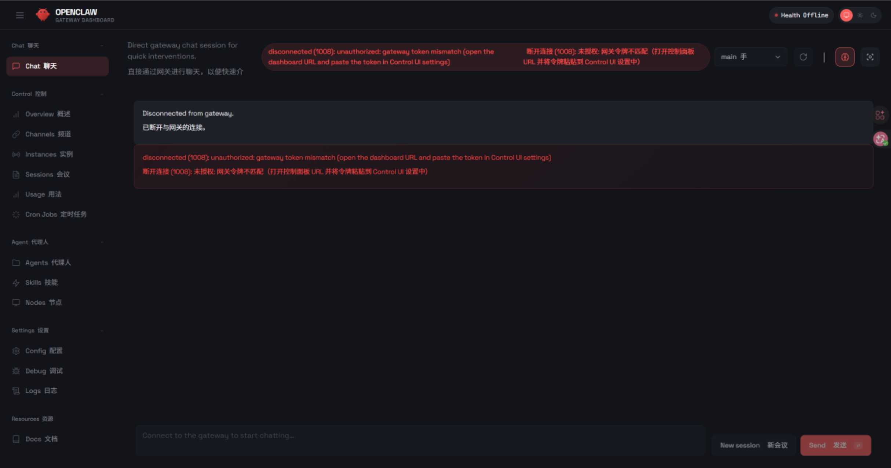
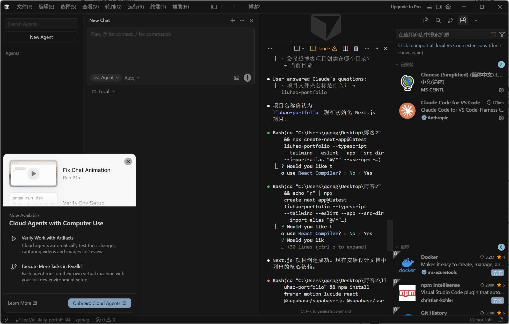

把模糊变清晰
计算机、Python、AI 与 Prompt：遇事找底层规律，用工具而非蛮力解决问题。
智术欲圆，行义须直

01 Video Script Extractor 在 Coze 平台上搭建的高效视频文案提取流。 Coze ASR
02 Academic Research Agent 基于 Dify 搭建的深度学术调研工作流。 Dify 飞书机器人
03 Agentic Dev Workflow 深度掌握 Claude Code、Cursor 等 Agent。 Claude Code MCP
04 Dynamic Visual Website Gemini+零前端代码基础 = 动态视觉网站 Gemini 05 Ascension Deck 「新征程」主题演示稿：封面、理念页与时间轴页。 PPT 演示文稿不是叠加更多标签，而是让不同能力在交叉处互相加成。
计算机、Python、AI 与 Prompt：遇事找底层规律，用工具而非蛮力解决问题。
PPT、吉他、行草与穿搭：在对的位置放对的东西，让内容被看见、被理解。
我的校准方式：逻辑让表达有骨架，审美让方案有温度；把想清楚和讲明白，作为同一件事完成。
选择一个维度，查看我如何把底层能力转化成具体的协作价值。
以结构化表达、学习落地和持续复盘，为目标服务。
我擅长把混乱的信息整理成清晰框架，用 AI + Python 减少重复劳动，也愿意在团队中做好技术与需求之间的“翻译”。
保持开放，让想法在不同城市与维度之间流动。拖拽旋转，任意角度观察。
点击证书可查看原图。